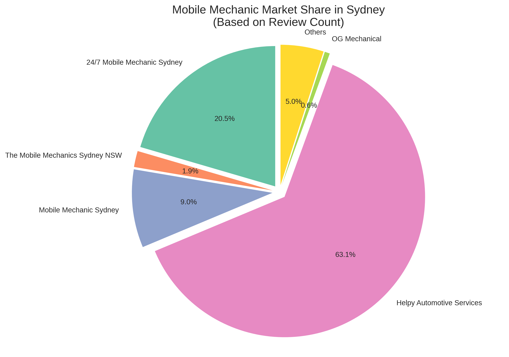

Competitor Analysis
Market Overview
The mobile auto-repair industry in Sydney is experiencing significant growth, with the mobile mechanic segment showing 15% growth compared to 8% for traditional repair shops. This analysis examines the key competitors in this space, their service offerings, pricing models, and market positioning.

Market share distribution among key competitors
Key Competitors
24/7 Mobile Mechanic Sydney
- Location: Old Guildford, NSW
- Years in Business: 7+ years
- Rating: 4.9/5 (619 reviews)
- Service Offerings: Pink Slip Service, Breakdown Service, Tyre & Brake Service, General Auto Repair & Maintenance
- Unique Selling Points: 24/7 availability, high customer satisfaction
- Contact: +61 447 449 227
Lube Mobile
- Market Position: "Australia's leading mobile mechanic"
- Business Scale: 100% Australian-owned, over 230 employees
- Coverage: National service with Sydney coverage
- Unique Selling Points: Established brand, large workforce, extensive service network
The Mobile Mechanics Sydney NSW
- Years in Business: 40+ years
- Rating: 4.9/5 (56 reviews)
- Service Offerings: 24/7 service, comprehensive auto repairs
- Contact: +61 2 8014 8192
- Unique Selling Points: Longevity in the market, highly rated service
Mobile Automotive Solutions
- Location: Randwick, NSW
- Years in Business: 10+ years
- Operating Hours: Opens 8 AM
- Contact: +61 416 040 076
- Unique Selling Points: Established eastern suburbs presence
Jim's Mobile Mechanics
- Coverage: Western Suburbs
- Business Model: Franchise operation
- Unique Selling Points: Recognized franchise brand, established systems
TLC Mobile Autocare
- Service Availability: 24/7 mobile car service
- Coverage: Across Sydney
- Unique Selling Points: Round-the-clock service
Pricing Analysis
Service Pricing Tiers
- Basic Service: Starting from $199
- Minor Service: Starting from $249
- Major Service: Starting from $449
Labor Rates
- Mobile mechanics typically charge $47-$60 per hour
- Industry range: $15-$125 per hour
Payment Options
Several competitors offer flexible payment options:
- Afterpay
- humm
- Zip
Geographic Coverage
Mobile mechanic services in Sydney cover:
- Sydney CBD
- Parramatta
- Blacktown
- Liverpool
- Camden
- Campbelltown
- Eastern Suburbs
- Western Suburbs
- South Western areas
Competitive Advantages
Established Players
- Brand Recognition: Lube Mobile and Jim's Mobile Mechanics leverage strong brand awareness
- Experience: Several competitors have 7-40+ years in business
- Customer Reviews: High ratings (4.6-5.0) across most established services
- Service Availability: 24/7 service offered by multiple competitors
Market Gaps and Opportunities
- Specialized Services: Few competitors focus on specific vehicle types or specialized repairs
- Technology Integration: Limited evidence of advanced booking systems or diagnostic technology
- Transparent Pricing: Opportunity for clearer, upfront pricing models
- Customer Education: Potential for services that better educate customers about maintenance needs
Recommendations for Market Entry
- Differentiation Strategy: Develop unique service offerings or target specific customer segments
- Technology Advantage: Implement superior booking and customer management systems
- Transparency Focus: Create clear, upfront pricing models to address customer pain points
- Service Quality: Emphasize certified technicians and quality guarantees
- Geographic Targeting: Identify underserved areas within Sydney for initial focus